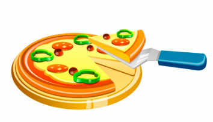

The schedule
- 900 9:00
-
Registration and Coffee
Because how can you be expected to learn anything today if you're not even awake yet?

Coffee!!!!
- 1000 10:00
-
Keynote: Jaime Levy (60 min)
Jaime Levy will discuss her recent role in defining the UX Strategy for the futuristic international transportation system called Hyperloop.
more detail
Jaime Levy
- 1100 11:00
-
Open Space Planning (30 min)
Agile coaches from ProCognita will guide us through the planning of the attendee-designed portion of the ACE conference. ACE was the first agile conference to incorporate open spaces, and they were so successful that most European agile conferences now feature open spaces.
You!
- 1130 11:30
-
Coffee Break (30 min)
Coffee, Tea, Juice, Cookies, Fuit
Coffee!
-
-
Justyna Wykowska - Building Product? Find your Vision. (90 min)
In product development we do care about where we are heading and we need a help in finding direction. The road sign we’re looking for is a product vision. No matter if your organization is a small start-up or huge corporation, if your product is in conceptual phase or is well placed on the market since years, you need a Vision to make correct business decisions. Join this workshop to learn tools you can use to build an engaging product vision.
more detail
Justyna Wykowska
- 1200 12:00
-
Anna Danés: Don't go nuts: Keys to successfully work in a distributed team (30 min)
We will analyze particular examples of the most common issues that we face when we work in a distributed team and how to beat them. From the perspective of a Project Manager, a Scrum Master and a team member. 100% practical and tested examples. This is meant to be a fun talk based on story telling with lots of tips.
more detailAnna Danés
-
Mina Boström Nakićenović: Improving Communication through Transactional Analysis (30 min)
An important part of agile leadership is improving communication between people. M. Spayd and M. Hamman are talking about shifting from directive – "managing for results" leadership style to catalysing – "designing environments that create results" style. Lyssa Adkins recommends avoiding asking ”Why don’t you…?” questions when coaching, as being too offensive. Clean language methodology promotes better clarity of communication. All mentioned recommendations are excellent but they require changes in behavioural patterns, which is not easy to achieve. Additionally, they do not give complete answers on the following: how to discover dysfunctional behavioural patterns, why we are ending up in them in the first place and how to manage to avoid them?
more detail
Mina Boström Nakićenović
- 1230 12:30
-
Short Break
Ten minutes to grab a coffee and get to the next great talk!
Coffee!!!!
- 1240 12:40
-
Amanda Stockwell: Build Measure Learn is Broken (30 min)
The Build, Measure, Learn loop is at the center of the Lean Startup approach, which is becoming increasingly popular among companies of all sizes. While the framework calls for very UX-friendly processes, such as collecting iterative feedback and focusing on building a Minimal Viable Product (MVP) required for doing so, the way most companies implement Build, Measure, Learn is broken and reinforces bad old habits of building first, assuming later. Many engineering teams use Build Measure Learn as an excuse to jump into building a skeleton version of a product, assuming that they can only get good feedback once they have working code. While most of us know you should incorporate research earlier, and the Lean Startup approach actually calls for it, it can be hard to change the minds of development-centered thinkers.
more detail
Amanda Stockwell
-
Hélio Vogas: Lean Productivity (Work Ethics That Make You Go Through The Lean Cycle Faster) (30 min)
The Lean Startup concept allows us to deploy and improve products faster. If you and your team aren't performing as well as you can, this slows down the process and it will take longer for you to go through the Lean cycle.
more detail
Hélio Vogas
- 1310 13:10
-
Lunch
Menu to be announced (vegan and gluten-free options will be available)
Food!!!!
- 1400 14:00
-
Open Spaces (90 minutes)
This is the part of the conference that you designed to address exactly what's most interesting to you.
Open Space
- 1530 15:30
-
Keynote: James Priest - Enterprise Wide Agility With Sociocracy 3.0 (45 min)
Agile and Lean have delivered fantastic results for improving flow of value to customers, but sooner or later agile teams bump into limitations, especially as an organization grows. Learn about the principles of Sociocracy 3.0 and how its modular menu of patterns can help organizations to navigate complexity, tap collective intelligence to continually innovate, and grow enterprise wide agility at any scale.
more detailJames Priest
- 1615 16:15
-
Short Break
Coffee, Tea, Juice, Cookies, Fuit
Coffee!
-
-
Magdalena Firlit - Building happy and functional teams! (120 min)
During my professional experience I have met plenty of teams that were happy or unhappy, functional or dysfunctional. Be aware of groups dynamic and find out what sort of dysfunctions might happen to your team. Those things are so important when your goal is to cooperate in great, functional environment. Looking for handy tools for Development team that help them to track their skills? This workshop will also answer to this question!
more detail
Magdalena Firlit
- 1625 16:25
-
Avi Itzkovitch (60 min)
-
Rachel Jolin Dubois and Cecile Auret - Boost your SAFe Portolio with Lean UX (60 min)
I work as an internal Coach for the IT department of the National Agency for Employment in France. I work within a team of 4 internal coaches to supports our teams on the implementation of agile methods (XP, SCRUM, KANBAN), and more precisely on agile at scale (SAFe). Our work over the last months has focused on supporting the maturation of the customer / business need and its expression within the Portfolio, as well as on the integration of UX, Design Thinking and Lean Startup methods.
more detail
Rachel Jolin Dubois and Cecile Auret
- 1725 1725
-
Short Break
Ten minutes to grab a coffee and get to the next great talk!
Coffee!!!!
- 1730 17:30
-
Nicole Saidy - Bridging the Designer-Developer Gap (30 min)
It’s no surprise that designers and developers tend to be separate teams. Designers are all about creativity and art; developers are about logic and effectiveness. Yet what we don’t realize is that both of them have one trait in common: to solve problems. Both have to work together to make their product work. Learn how to better communicate with developers through tips and tricks for less headaches & a smarter workflow. You will learn how to improve understanding, communication and collaboration between the two teams through documentation, prototyping, management tools and much more.
more detailNicole Saidy
-
Wiktor Zolnowski - Queuing Theory and Theory of Constraints the science behind every effective process (30 min)
Few years ago I have been performing a research about Theory of Constraints and Queuing Theory. I was looking for something that would help my measure our system maximum performance without creating performance tests. By accident, I have discovered that Theory of Constraints (TOC) stands behind almost every effective software development process. What if I will tell you that Scrum works because of TOC? What if Kanban works because of it? What if many unnamed but still well working processes works thanks to more or less conscious TOC applications? If you have never heard about Theory of Constraints I would love to share few stories with you. more detail

Wiktor Zolnowski
- 1000 10:00
-
Keynote: Richard Sheridan - Build a Workplace People Love – Just add Joy (60 min)
This is not a theoretical talk, but rather a talk built from well over a decade of experience of leading a team focused on “the business value of joy”. There will be lots of room for discussion with the audience. The audience will begin to understand why thousands of people make the journey to Ann Arbor, Michigan every year to see The Menlo Software Factory firsthand, and why so many more are reading about it in Joy, Inc. – How We Built A Workplace People Love.
more detail
Richard Sheridan
- 1100 11:00
-
Coffee Break (30 min)
Coffee, Tea, Juice, Cookies, Fuit
Coffee!
-
-
Anna Danés - A Digital Relationship: Communication with remote clients. (90 min)
Do you get frustrated with remote collaboration with clients? Do you wish all your team members were always in one room?
Through several fun activities we will become aware of the challenges of remote collaboration and how to successfully deal with them.
more detail
Anna Danés
- 1130 11:30
-
Wojciech Chojnacki: Rapid user research for the Agile/Lean world (30 min)
Is user research/testing too slow for Agile/Lean organizations? While UX is valued in both Agile and Lean thinking, we are still looking for new ways to align user insights collection with fast production cycles. I'd like to share some of the methods which are rapid, efficient and yet relatively unknown. The presentation will include examples on how to implement them in your design and development processes.
more detail
Wojciech Chojnacki
-
Russell Lewis: The Role of the Manager & Managing Senior Managers (30 min)
The role of the agile manager is to enable knowledge-based work. As 'enablers', managers are there to remove blockers, increase competence and ensure collaboration. Except nobody's told them that officially. Many managers in large organisations are simply doing what they've been trained to do - protecting the assets of the organisation from their unpredictable employees!
more detail
Russell Lewis
- 1200 12:00
-
Short Break
Ten minutes to grab a coffee and get to the next great talk!
Coffee!!!!
- 1210 12:10
-
Matteo Cavucci - Redesign design (30 min)
-
Kasia Mrowca - Delivering Unicorns (30 min)
Brand new shiny’ project(s), no legacy, everything to build and design from scratch… Dream scenario, innit? Well, can be a nightmare when under this description is hidden few years old project which is still under ‘construction’ and can’t be used by business/users even though it’s kinda ‘working’. Yep, this means mess and few years legacy code even before going to the production. Yay, what a fun! more detail
Kasia Mrowca
- 1240 12:40
-
Lunch
Menu to be announced (vegan and gluten-free options will be available)
Food!!!!
- 1400 14:00
-
Open Spaces (90 minutes)
This is the part of the conference that you designed to address exactly what's most interesting to you
Open Space
- 1530 15:30
-
Keynote: Iwona Cymerman - Let's come to value: finding solutions over finding excuses (20 min)
Description more detail

Iwona Cymerman
- 1550 15:50
-
Short Break
Coffee, Tea, Juice, Cookies, Fuit
Coffee!
-
-
James Priest - Good enough for now, safe enough to try - Patterns for effective collaborative decision making (that scale) (120 min)
Good governance should enable individuals and teams to get on with creating maximal value and avoid unnecessary bottlenecks of a decision making hierarchy. But for organizations to maintain and evolve effectiveness, sometimes it pays to invest time in collaborative decision making between affected stakeholders. This workshop reveals some basic principles and practices for doing so in ways that make the best use of a diversity of perspectives while avoiding the pitfall of consensus decision making paralysis! more detail

James Priest
- 1600 16:00
-
Iga Mościchowska - Product requirements through workshops (30 min)
SummaryAsking users what they want doesn't work. But neither does asking the business what they need. However, there's a way of making the process of gathering the requirements more engaging, less painful and with more satisfying results. It's workshops - with the team, the business or/and the end users.
more detail
Iga Mościchowska
-
Tomek Rusiłko (30 min)
I will share a story how our approach to estimation at Lunar Logic evolved from a common scenario to what we call statistical forecasting. We’ll share the theory behind, show how we do it and present some real data to back up the story. After all, once we understand why estimation is hard we can easily improve how we do it. more detail

Tomek Rusiłko
- 1630 16:30
-
Short Break
Ten minutes to grab a coffee and get to the next great talk!
Coffee!!!!
- 1640 16:40
-
Janet Bumpas - Picking winning teams for a corporate innovation initiative (30 min)
23% of startups fail due to having the wrong team. And similar statistics hold true for intrapreneurial teams at large companies. So, whether the team is using Lean Startup, Design Thinking, Agile, or Scrum, getting the right people on the team is also very important.
more detailJanet Bumpas
-
Piotr Nabielec - What 1.000 people taught me on personal and team productivity (30 min)
While working with hundreds of people as a trainer and consultant on the topic of Personal and Team Productivity I am trying to find patterns that I could share with others. This talk will focus on methods and tools that most people found useful, most practical and easiest to use in their daily life. more detail

Piotr Nabielec